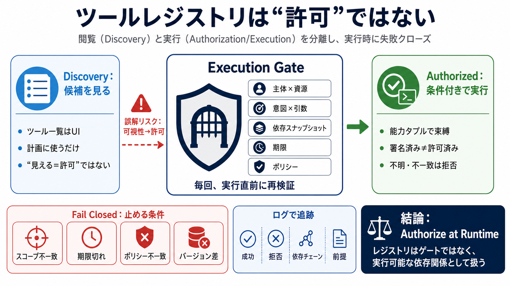

cover
02 / 14
ツール安全の出発点
Tool Registry
ツールレジストリ（カタログ）を「便利なメニュー」として扱う設計は危険です。安全の鍵は、閲覧（discovery）と実行（authorization/execution）を分離し、実行層で失敗クローズすることです。
problem
03 / 14
境界が溶ける
便利メニュー
署名済みのツールレジストリでも、「そのツールが呼べる」という可視性が計画（プランニング）に入り得ます。するとモデルが “呼べる＝許可されている” と誤解し、認可境界が崩れるリスクがあります。
Risk / 脅威
可視性→許可への転化（閲覧と認可の結合）
Key idea / 要点
レジストリはUIであって“ゲート”ではない
metaphor
04 / 14
依存関係の誤認
Not a Menu
レジストリは「一覧」ではなく、実行可能な依存関係（ロックファイル＋IAMに近い）として扱うべきです。
Menu / UI
“見る”ことが中心
Registry / 実体
“実行できる前提”を運ぶ
Gate / 承認
実行直前に可否を判定
architecture
05 / 14
設計の骨格
Discovery × Gate
閲覧（discovery）は情報提供に留め、実行（authorization/execution）は実行層で毎回チェックします。計画時に分離しても、ゲートが弱ければサプライチェーン的な権限逸脱が起きます。
Planning / 計画
ツール候補を知る（だが許可はしない）
Execution Gate / 実行ゲート
主体・スコープ・意図・引数・依存スナップショットを再検証
enumeration
06 / 14
認可の単位
Capability Tuple
認可は「ツール名」ではなく、呼び出しのタプルで束縛します。
i
主体×資源
誰（主体）／どこ（資源スコープ）
ii
意図×引数
意図（intent）と引数（arguments）
iii
依存スナップショット
バージョン＋依存関係の固定点
iv
期限×ポリシー
期限（liveness）とポリシーエポック
distinction
07 / 14
Verified ≠ Authorized
Signature Trap
署名済みマニフェストやアテステーション（オラクル分離）が示すのは「整合性（改ざんされていない等）」です。
Verified（検証）
配布元／改ざん耐性の証明になりやすい
Authorized（許可）
今この主体に、今このスコープと引数で許されるか
つまり “verified＝authorized” の混同が危険で、最後は実行層の能力判定が必要です。（RIP-0312のような方向性も、文脈によっては十分でない）
evidence
08 / 14
失敗クローズ
Fail Closed
実行時に判定できない条件（スコープ不一致、期限切れ、ポリシー不一致、バージョン差）では実行を拒否して止めます。安全側に倒すことで許可逸脱の確率を下げます。
Policy / ポリシー
ポリシーが見つからない／エポック不一致
Scope / スコープ
資源スコープが一致しない
Args & Intent
引数や意図が許可された能力とズレる
Version / 依存
バージョンや依存スナップショットが異なる
process
09 / 14
ステール対策
Policy Drift
計画時に正しくても、ポリシー更新やスコープ失効が追随できないと古い承認が生き残ります。これがステールオーソリゼーション（stale authorization）の典型リスクです。
Failure mode
無効化後も承認が残る（反映速度不足）
Mitigation / 対策
短寿命リース、実行時再検証、古いプラン無効化
evidence
10 / 14
観測負債
Logs Aren’t Enough
成功ログだけでは原因特定が遅れます。「どんな前提で、どの依存チェーン仮定で、どの能力が成立したか」を追えないためです。拒否ログも攻撃面の地図になり得て重要です。
Success（成功）
実行した事実は残る
Denied（拒否）
境界条件・攻撃試行の地図になる
Dependency chain
依存スナップショットの追跡
Assumptions
前提（政策・意図・引数）の再構成
comparison
11 / 14
何を分ける？
UI vs Gate
対比すると、レジストリ一覧が「許可」に見えてしまう構造が根因になります。安全は“実行ゲートの強さ”で作ります。
危険な設計
可視性（閲覧）→計画に混入→自動的に許可扱い
安全な設計
閲覧は候補提示に留め、能力タプルを実行時ゲートで再評価
process
12 / 14
採用の現実
Principles + Gaps
原則は強く支持されますが、コメント断片の集合としては実装要件（能力の粒度、情報共有量、障害時運用、レイテンシ）が体系化されていません。RIP-0312／RustChain／Capsicum等の“どこが実行ゲートか”も文脈追加が必要です。
Support / 支持
閲覧と実行の分離、実行時ゲート、能力束縛、ステール対策
Need / 要調査
粒度・運用・可用性トレード・障害時挙動の具体
closing
13 / 14
一文まとめ
Authorize at Runtime
ツールレジストリを“実行可能な依存関係”として扱い、認可は実行時ゲートで能力タプル（主体×資源×意図×引数×依存スナップショット）を失敗クローズで評価します。
Action / アクション
閲覧（discovery）と許可（authorization）を分離
Action / アクション
実行層で再検証し、拒否はログで追えるようにする
REFERENCES
14 / 14
References
No references found